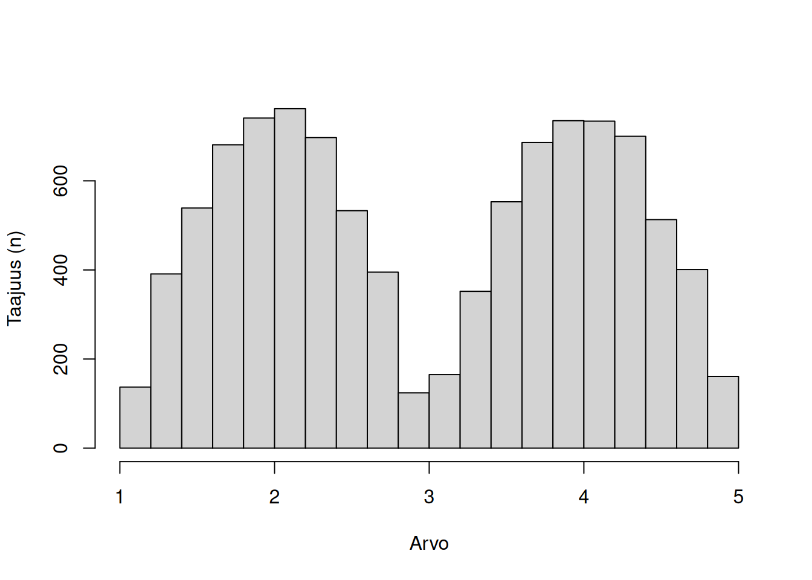
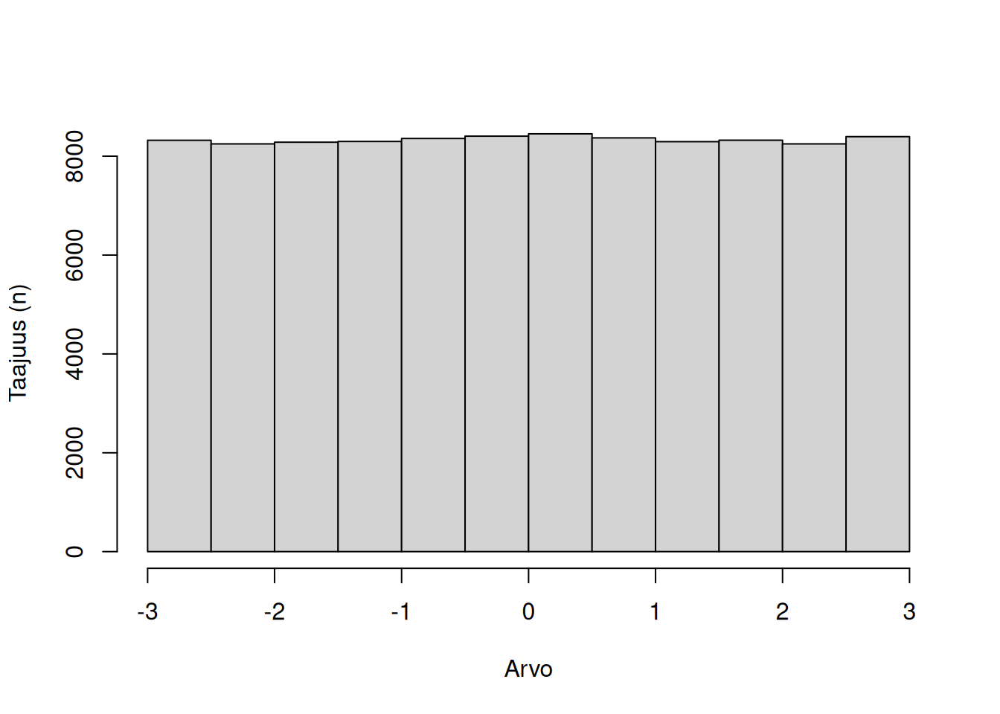
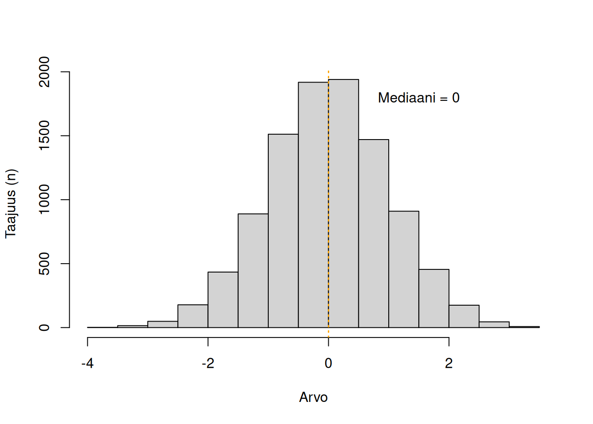
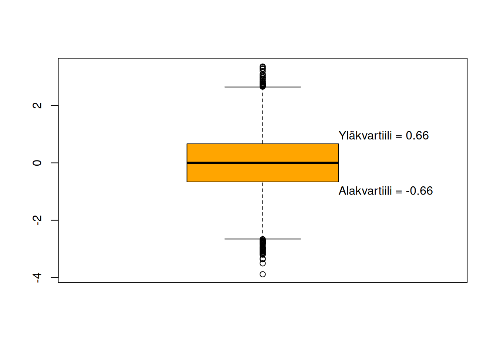
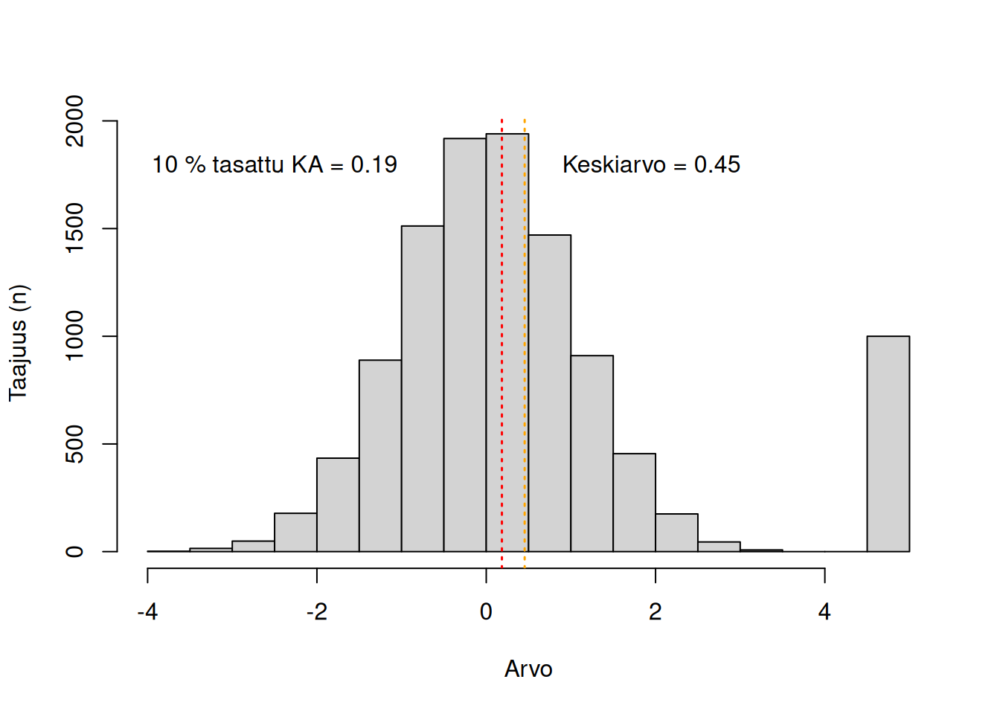
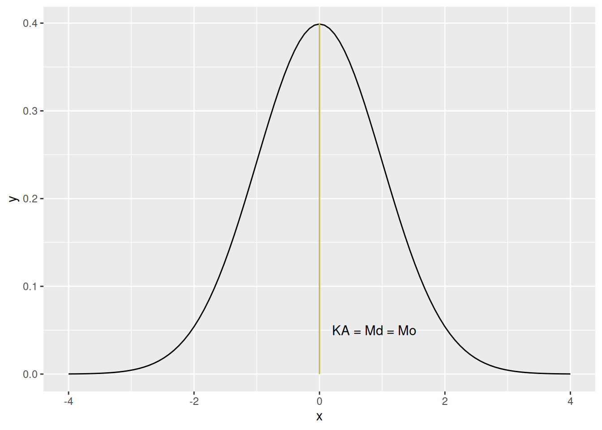
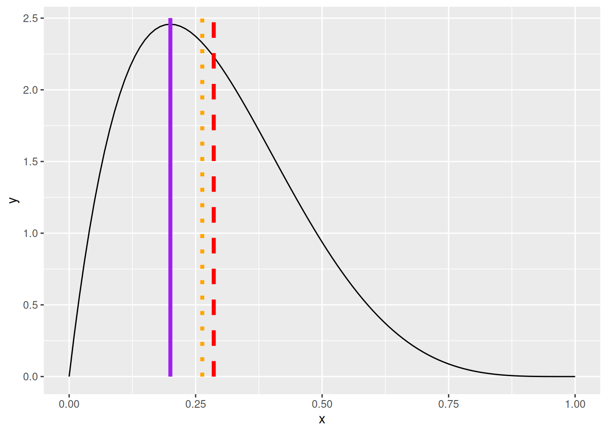
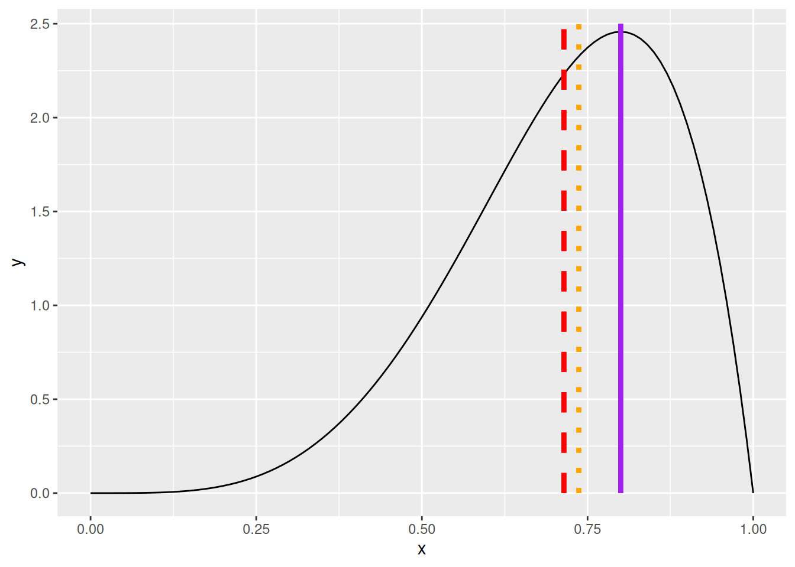

7 Sijaintiluvut
Tässä luvussa käydään läpi sijaintilukujen määritelmät, käyttö ja toteuttaminen Excelissä.
Sijaintiluku on yksittäinen luku, joka kertoo jotain muuttujan jakauman keskeisyystendenssistä (engl. central tendency). Toisin sanoen, ne kertovat mihin kohtaan jakauma sijoittuu.
Sijaintilukuja, joita tässä kirjassa käydään läpi ovat: moodi, mediaani, fraktiilit ja aritmeettinen keskiarvo.
7.1 Moodi
Mittausasteikot: Kaikki
Moodi on jakauman tyypillisin arvo. Moodin voi saada laskemalla jokaisen arvon esiintymisen, jolloin eniten esiintyvä arvo on jakauman moodi.
Jakauma voi olla unimodaalinen (yksi moodi), bimodaalinen (kaksi moodia) tai multimodaalinen (kolme tai useampi moodia). Katso kuvalliset esimerkit alla.
Normaalijakaumassa moodi, keskiarvo ja mediaani ovat kaikki samoja. Positiivisen ja negatiivisen vinouman normaalijakaumissa moodi pysyy samana, mutta keskiarvo ja mediaani muuttuvat. Kurtoosi ei vaikuta normaalijakauman moodiin.
Uniformijakaumassa kaikki datapisteet ovat jakauman moodeja, koska jokainen esiintyy yhtä useasti.
Moodi kirjoitetaan useimmiten merkeillä \(\text{Mo}\).
Funktiot Excelissä:
MOODI.YKSI(alue)MOODI.USEA(alue)
Lue lisää alaluvussa Alaluku 19.7.1.3.



7.2 Mediaani
Mittausasteikot: Järjestys-, välimatka- ja suhdeasteikko
Mediaani on jakauman keskipistearvo. Mediaanin voi saada järjestämällä kaikki arvot pienimmästä suurimpaan, ja jakamalla janan kahteen tasakokoiseen osaan. Jos jakaumaan kuuluu pariton määrä arvoja, mediaani on janan keskipiste. Jos jakaumaan kuuluu parillinen määrä arvoja, mediaani on kahden keskeisimmän arvon keskiarvo, \(\frac{a+b}{2}\).
Jakaumassa voi aina olla vain yksi mediaani.
Normaalijakaumassa moodi, keskiarvo ja mediaani ovat kaikki samoja. Mediaaniin vaikuttaa vinouma, joskin ei yhtä paljon kuin keskiarvoon. Kurtoosi ei vaikuta normaalijakauman mediaaniin.
Mediaani kirjoitetaan useimmiten merkeillä \(\text{Md}\) tai \(\text{M}\).
Funktiot Excelissä:
MEDIAANI(alue)
Lue lisää alaluvussa Alaluku 19.7.1.4.

7.3 Fraktiilit
Mittausasteikot: Järjestys-, välimatka- ja suhdeasteikko
Fraktiilit (sanasta fraction; vaihtoehtoisesti kvantiilit, sanasta quantity) ovat yleistyksiä mediaanista. Fraktiileja löytyy useampia, joista yleisimmät ovat kvartiilit (neljäsosat), kvintiilit (viidesosat), desiilit (kymmenesosat) ja persentiilit (sadasosat).
Fraktiilin voi saada järjestämällä kaikki arvot pienimmästä suurimpaan, ja jakamalla jana tiettyyn määrään samankokoisiin osiin.
Fraktiilin nimi kertoo, kuinka monta osaa: kvartiilit edustavat neljää osaa, kvintiilit viittä osaa, desiilit kymmentä osaa ja persintiilit sataa osaa.
Fraktiilit ilmaistaan numerosarjana jossa on \(k-1\) numeroa. Kvartiileille ilmaistaan siis kolme arvoa (ensimmäinen, toinen ja kolmas kvartiili), desiileille yhdeksän arvoa, ja persentiileille 99 arvoa. Käytännössä yleensä ilmaistaan vain ne, joista ollaan kiinnostuneita, varsinkin persentiilien kohdalla.
Kvartiileille toinen kvartiili on sama kuin mediaani. Jos ensimmäinen kvartiili on pienimmät 25 % jakaumasta, ja toinen kvartiili on seuraavat 25 %, niin yhteensä ne edustavat 50 % jakaumasta, samoin kuin mediaani.
Fraktiilit voivat olla inklusiivisia tai ekslusiivisia. Inklusiivinen fraktiili sisältää raja-arvon, ekslusiivinen fraktiili ei sisällä raja-arvoa.
Esimerkkinä septiilit, eli seitsemännesosat. Ensimmäinen septiili (inklusiivinen) edustaa prosenttiosuuksia 0-7 %, toinen septiili prosenttiosuuksia 8-14 %, jne., ja kuudes septiili osuuksia 94-100 %. Tällöin toisen septiilin alle jää 14 % kaikesta datasta ja ylle jää \(100-14 = 86\%\). Yleistäen voi siis sanoa, että N:n septiilin alle jää aina \((7*N)\%\) ja ylle jää \(100-(7*N)\%\).
Kvartiilit kirjoitetaan useimmiten muotoon \(Q_n\), jossa \(n\) on kvartiilin järjestysnumero. Ensimmäinen kvartiili on \(Q_1\), toinen kvartiili (mediaani) on \(Q_2\), ja kolmas kvartiili on \(Q_3\). Muille fraktiileille ei löydy yleistä kirjoitusmuotoa.
Funktiot Excelissä:
PROSENTTIPISTE.SIS(alue; k) - PROSENTTIPISTE.ULK(alue; k)- Valitse persentiili
kdesimaalina, sekä haluatko inklusiivisen (SIS) vai ekslusiivisen (ULK)
- Valitse persentiili
NELJÄNNES.SIS(alue; neljännes) - NELJÄNNES.ULK(alue; neljännes)- Valitse, kuinka mones
neljännes: Pienin arvo0, ensimmäinen neljännes1, mediaani2, kolmas neljännes3, suurin arvo4.
- Valitse, kuinka mones
Lue lisää alaluvussa Alaluku 19.7.2.1.

7.4 Keskiarvo
Mittausasteikot: Välimatka- ja suhdeasteikko
(Aritmeettinen) Keskiarvo on jakauman painoitettu keskipiste, jossa painona käytetään jokaisen datapisteen esiintymistä. Keskiarvo lasketaan summaamalla kaikki datapisteet yhteen ja jakamalla tulos datapisteiden määrällä, \(N\)1:
1 Jonkun arvon jakaminen \(N\):llä on sama kuin sen kertominen luvulla \(1/N\).
\[\bar{x} = \frac{x_1 + x_2 + x_3 + ... + x_k}{N} = \frac{1}{N}(\sum_{i = 1}^{k}x_i)\]
Keskiarvo ei ole robusti sijaintimitta. Se vaikuttuu suuresti ääripääarvoista.
Normaalijakaumassa mediaani, keskiarvo ja moodi ovat kaikki samoja. Vinouman myötä keskiarvo siirtyy vinouman suuntaan (oikealle positiivisessa ja vasemmalle negatiivisessa vinoumassa). Kurtoosi ei vaikuta keskiarvoon.
Keskiarvo on kuitenkin erittäin oleellinen useimmissa tilastollisissa malleissa. Keskiarvoa käytetään niin sanottuna nollamallina, eli datajakaumaa “huonoiten” kuvaavana mallina. Useimmiten hypoteeseilla testataan siksi, eroaako jokin malli keskiarvon selitekyvystä. Jos ei, malli ei ole keskiarvoa parempi (eli on huono).
Vakaampana keskiarvomittarina voidaan käyttää tasattua keskiarvoa (engl. trimmed mean). Tällöin poistetaan ensin tietty prosenttiosuus jakauman ääripäistä, ja lasketaan sitten keskiarvo jäljelle jäävälle datalle. Yleinen prosenttiraja on 95 %, eli poistetaan 5 % (kaksi ja puoli prosenttia molemmista päistä) ja lasketaan keskiarvo jäljelle jäävälle osuudelle. Jos tasattu keskiarvo on hyvin samanlainen kuin keskiarvo, ääripääarvot eivät vaikuta suuresti keskiarvoon.2
2 Tämä pätee vain keskiarvolle, ja vain yksinmuuttujakontekstissa. Monimuuttujakontekstissa ääripääarvot voivat olla ongelmallisia vaikka eivät vaikuttaisi yksittäisen muuttujan keskiarvoon. Rajatun ja tavallisen keskiarvon samankokoisuus ei siis takaa luotettavia analyyseja itsessään!
Tasaus ja tasaluvut
Tasauksen yhteydessä parasta on yleensä poistaa sama määrä yksiköitä jakauman alusta ja lopusta. Excel tekee tämän automaattisesti: funktio KESKIARVO.TASATTU() pyöristää määrän ylöspäin lähimpään parilliseen lukuun (esim. 2, 56, 348) ja poistaa puolet määrästä jakauman alapäästä ja puolet yläpäästä. Kaikki tilastosovellukset eivät tee tätä, jolloin tasattu keskiarvo voi vaihdella hieman.
Funktiot Excelissä:
KESKIARVO(alue)KESKIARVO.TASATTU(alue; rajaus)
Lue lisää alaluvussa Alaluku 19.7.1.5.

7.5 Moodin, mediaanin ja keskiarvon yhteys
Koska moodi, mediaani ja keskiarvo kuvaavat kaikki jakauman sijaintia, niillä on yhteys toisiinsa. Täydellisessä normaalijakaumassa moodi, mediaani ja keskiarvo ovat kaikki samoja (ks. Kuva 7.9).

Tämä tasapaino pätee kuitenkin vain täydelliselle normaalijakaumalle. Kun kyseessä on otanta, muuttujan jakauma voi muistuttaa (lähestyä) normaalijakaumaa, mutta ei täydellisesti. Pieniä eroja siis on, vaikka muuttuja muuten olisi otanta populaatiosta, jossa muuttujan todellinen jakauma on normaalijakauma.
Jos jakauma nojaa johonkin suuntaan (eli jakaumalla on enemmän tai vähemmän vinoumaa), sijaintiluvut siirtyvät, mutta eri tahtiin (ks. Kuva 7.10).


Muutoksen näkee sekä kuvasta että arvoista:
| Sijaintiluku | (a) Negatiivista vinoumaa | (b) Positiivista vinoumaa |
|---|---|---|
| Moodi | 0.2 | 0.8 |
| Mediaani | 0.26 | 0.74 |
| Keskiarvo | 0.29 | 0.71 |
Negatiivisessa vinoumassa keskiarvo siirtyy eniten oikealle moodista nähtynä, mediaani hieman vähemmän. Positiivisessa vinoumassa käy toisinpäin.
Kokeille alla olevassa interaktiivisessa applikaatiossa muuttaa jakauman muotoa, niin näet miten sijaintiluvut muuttuvat!